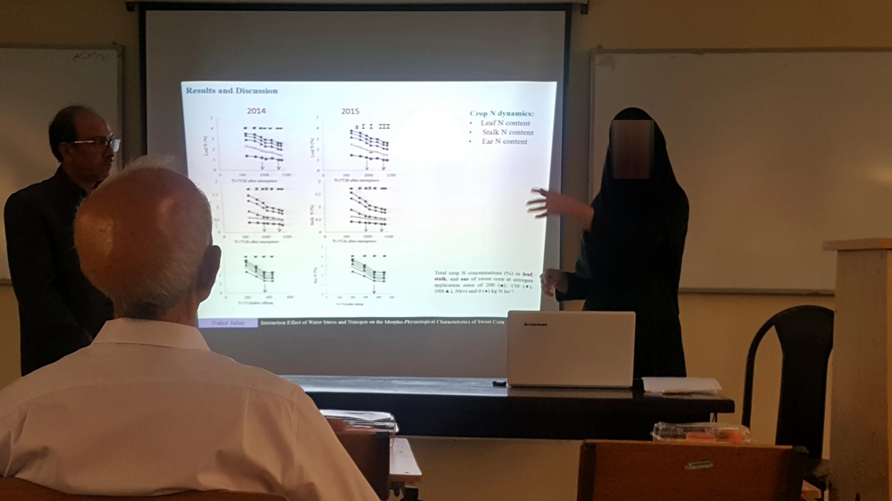
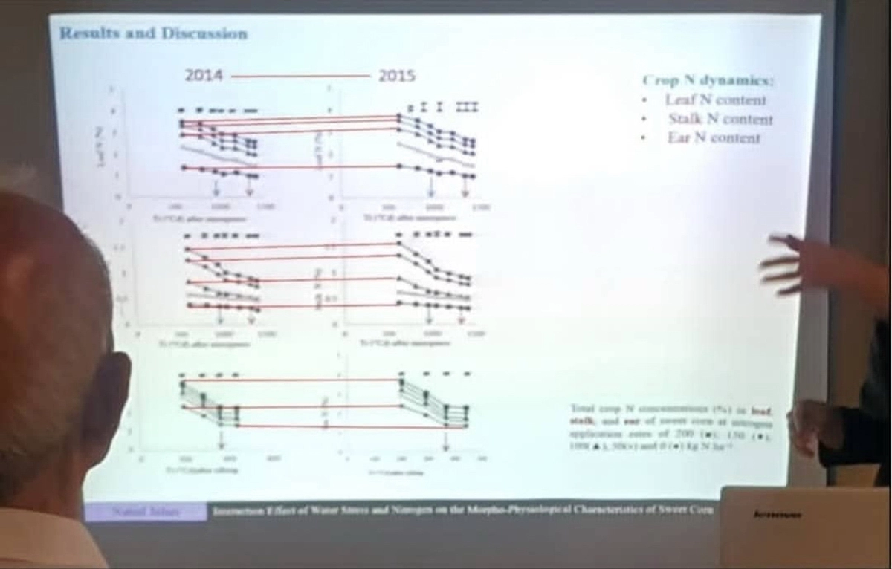
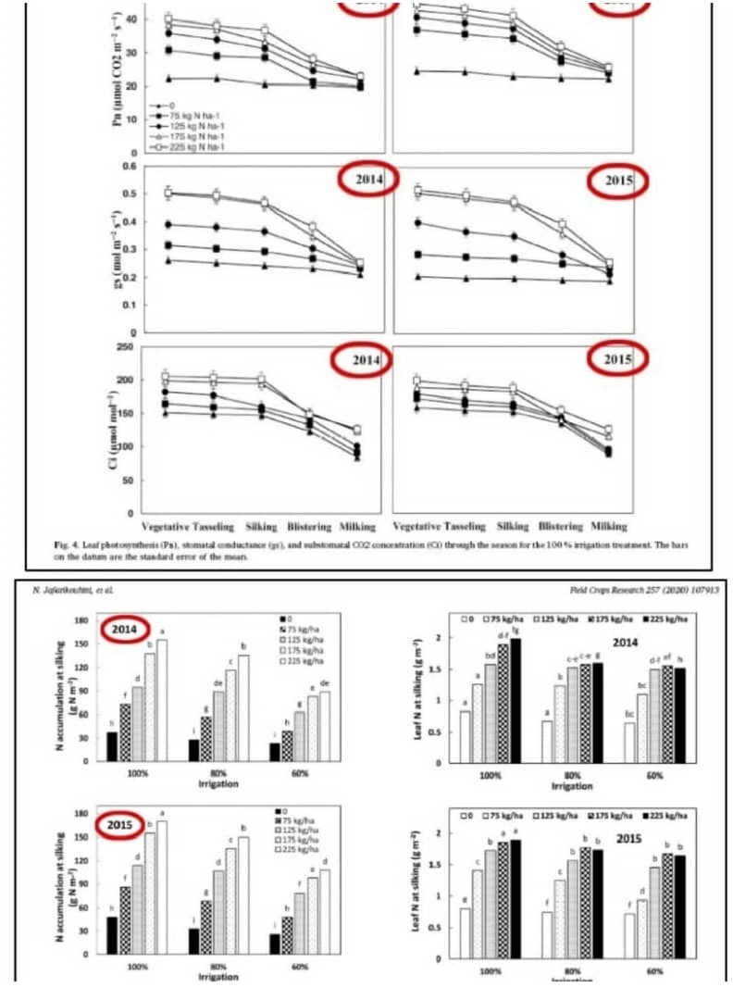
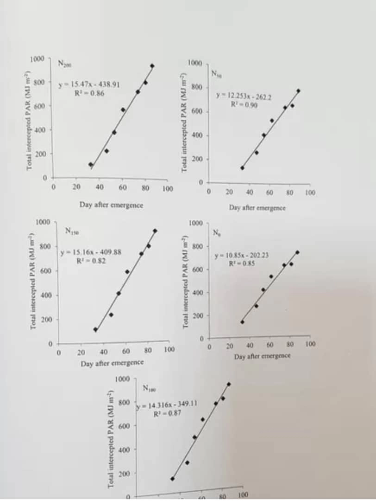
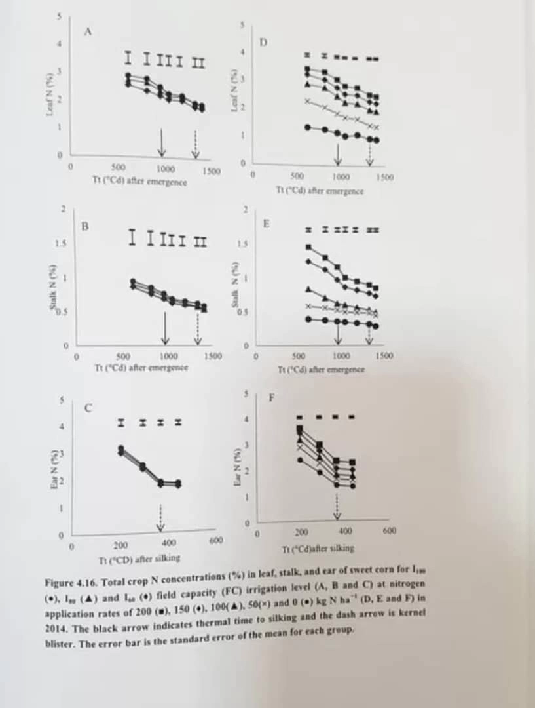
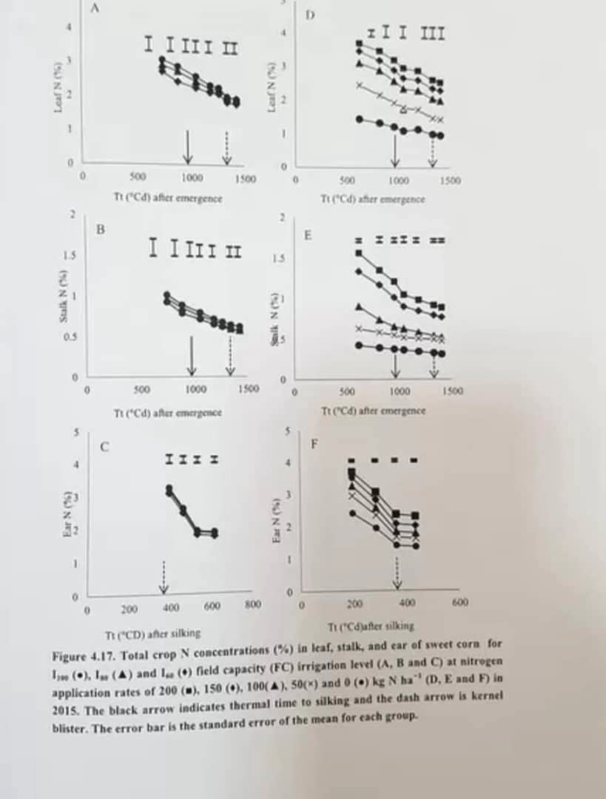

An Eye Test

Do these graphs appear unusually repetitive to you as well, or is there something wrong with my eyesight?
This is only one of many examples found in papers and dissertations produced at Shiraz University. What is remarkable is that the university itself, the Ministry of Science, the Supreme Council of the Cultural Revolution, and the National Inspection Organization all seem to see something entirely different, and have stood firmly behind the validity of these publications. (The red lines were added by me.)
In my assessment, these images contain fabricated data. They were first noticed in 2017 during the defense of a doctoral dissertation, and during that very session we explicitly asked both the student and the committee members to explain them.
By coincidence—or perhaps not—the chair of the session and representative of graduate studies was none other than the then-Dean of the Faculty of Agriculture and the current President of Shiraz University (see the second slide).
What was the response?
Nothing.
The very same images and graphs later found their way into supposedly reputable journals. They were also reproduced verbatim in the printed dissertation.
Despite extensive follow-up with numerous authorities, not a single paper has been retracted to this day, and Iran’s scientific establishment as a whole has continued to support the published information.
(For article sources and additional information, please refer to the relevant channel.)

Postscript: Following the publication of the first installment of Lesson One, questions from students and interested readers prompted me to share more of the simple yet valuable lessons learned through years of pursuing cases of systematic scientific misconduct at Shiraz University.
My hope is that these experiences may contribute, however modestly, to a better understanding of how scientific systems can recognize and correct integrity failures.
After publishing some of the documentation relating to corruption at Shiraz University in future posts, we can also examine the invaluable experiences of other countries in confronting similar problems.
It should also be noted that if, for any reason, publication of Lesson One is interrupted, the complete documentation has already been made available through the associated Telegram channel and X account (formerly Twitter), where it will also be preserved by others.



